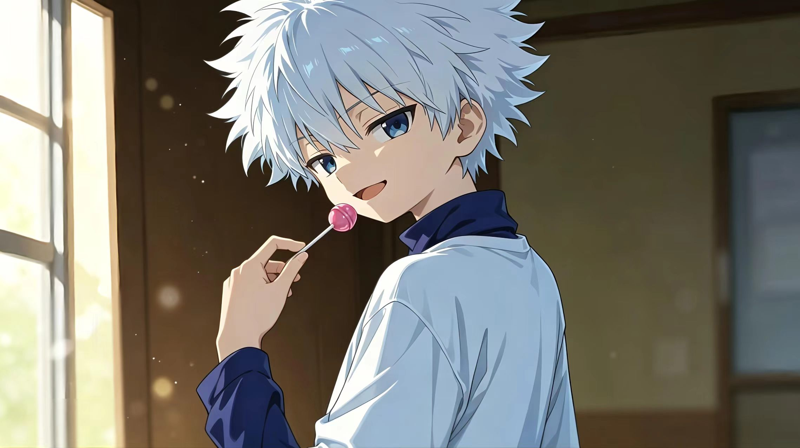
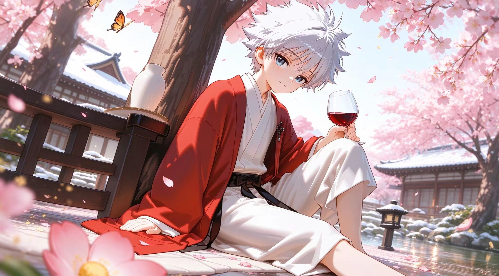

奇犽




基本信息
- 中文名：奇犽·揍敌客
- 出处：《全职猎人》
- 声优：伊濑茉莉也；三桥加奈子
- 身份：揍敌客家族三子，前职业杀手，变化系能力者
角色简介
平时悠哉，嘴巴有些恶毒，喜欢捉弄人，但心底非常温柔，是团队里的“理性刹车”，但在信任的人面前会展示孩子气的一面
"该庆幸的人是我，能遇到你真是太好了"<——返回首页 <——返回角色图鉴


平时悠哉，嘴巴有些恶毒，喜欢捉弄人，但心底非常温柔，是团队里的“理性刹车”，但在信任的人面前会展示孩子气的一面
"该庆幸的人是我，能遇到你真是太好了"<——返回首页 <——返回角色图鉴